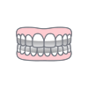
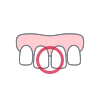
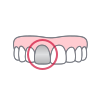
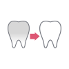
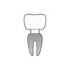
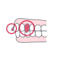
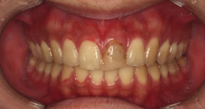

歯の表面に薄いセラミックを貼り付け形や色を整える審美治療です。当院では850件以上・10,000本超の実績があり、天然歯を極力削らず健康的に美しい歯を実現します。


歯をできるだけ削らない方法・
健康的な審美歯科
5DENTAL東京銀座では、 審美歯科 に力を入れています。
当院では、 「より低侵襲で体に優しい、健康を犠牲にしないような審美歯科」 が望ましいと考えています。
審美歯科の選択肢として、ホワイトニングやマウスピース矯正、 オールセラミックや削らないラミネートベニアなど、 「歯をできるだけ削らない方法」で「健康的な方法」を提案します。


Troubles
お悩みから治療法を探す

テトラサイクリン歯
テトラサイクリン系抗生物質の影響で歯が変色している。

すきっ歯/矮小歯
通常よりも歯が小さく、歯と歯の間に隙間ができている。

失活歯/変色歯
神経を失った歯などが黄ばんだり、黒ずんでいる。

歯を真っ白にする
ホワイトニングよりも白くて綺麗な歯にしたい。
詰め物の変色
前歯の詰め物が変色し、本来の歯との色の差が気になる。

差し歯の色
できるだけ歯を削らず、歯の色を揃えたい。
歯並びが気になる
前歯の歯並びに異常があり、審美的に気になっている。

出っ歯/八重歯
歯列矯正×セラミックなどの治療を提案いたします。
歯を大きくしたい
歯を大きくして、笑った時に華やかな口元になりたい。


Cases
症例紹介
失活歯/変色歯
術 前
術 後


左上1の変色歯を全体的にホワイトニングしてからのオールセラミッククラウン1本で改善しました。左上1は失活歯（神経のない歯）で変色しています。
全体的にホワイトニングを行い、左上1はオールセラミッククラウンにし、全体的に統一感と透明感のある仕上がりにしました。
テトラサイクリン歯が気になる
術 前
術 後


削らないラミネートベニアでテトラサイクリン歯（グレー系の歯）の色を改善した症例です。事前にホワイトニングを行い、ご自身の歯の色をできるだけ改善してからラミネートベニアを行いました。透明感を出すことで、周りの歯になじむ自然な仕上がりになりました。
テトラサイクリン歯の色調には個人差があります。グレー色が濃い方、帯状の模様が強い方は事前にホワイトニングを行い、歯の色をできるだけキレイにしてからラミネートベニアを行うようにしています。またテトラサイクリン歯でも不透明なベニアを選択すれば白くすることができます。この症例では、あえて透明なベニアで歯の色が透けることで自然と調和するようにしています。
詰め物の変色
術 前
術 後


前歯の詰め物が変色し、本来の歯との色の差が気になる方に向けた症例です。詰め物の色調を改善し、周囲の歯となじむように整えました。
すきっ歯/矮小歯
術 前
術 後


すきっ歯や矮小歯に対して、ラミネートベニアで歯の形態と隙間を整えた症例です。バランスの良い口元に仕上げています。
歯を真っ白にする
術 前
術 後


ホワイトニングだけでは届かない白さを、ラミネートベニアで実現した症例です。歯列全体の明度を合わせ、透明感のある印象に整えています。
差し歯の色
術 前
術 後


差し歯の色味を周囲の歯に合わせることで、自然な色調と統一感のある仕上がりに改善した症例です。
歯並びが気になる
術 前
術 後


歯並びのガタつきや前歯の不揃いを整え、自然なスマイルラインへ導いた症例です。
出っ歯/八重歯
術 前
術 後


歯肉整形とオールセラミッククラウンでガミースマイルと前歯の審美性を改善した症例です。上前歯8本に歯肉整形をして、上前歯中央4本にオールセラミッククラウンを行いました。
歯を大きくしたい
術 前
術 後


削らないラミネートベニアで歯の色・歯の形・ガミースマイルを改善した症例です。ガミースマイル改善のために歯肉整形を、全体にはホワイトニングをしたうえで前歯8本にラミネートベニアを行っています。
削らないラミネートべニア


審美歯科
その他のメニュー

Feature
当院の特徴

歯
をできるだけ削らない、
体の健康を優先した治療
自然歯をなるべく残した審美治療を心がけています。当院が得意とするラミネートべニアは、低侵襲・短期間での治療が可能で、多くの方にご好評いただいています。

高
品質な環境と、
治療設備
EPIOS殺菌水システムの導入により、清潔で安全な治療環境を整えています。さらに、最新のデジタル技術を活用し、精密かつ効率的な治療を提供しています。
EPIOS殺菌水システムのご紹介
銀
座駅出口直結の、
アクセスの良さ
当院は東京メトロ銀座駅直結、JR有楽町駅徒歩4分の好立地にあります。この利便性から、都内外を問わず多くの患者様にご来院いただいています。
当院へのアクセス方法を確認


歯科医師・博士（歯学）
阿部 洋太郎
Yotaro AbeDoctor
院長紹介
患者様により優れた治療を提案できる
クリニックに。
当院では、負担の少ない治療を心がけており、特にセラミック治療に力を入れています。歯をほとんど削らずに自然な美しさを引き出せるラミネートベニアにおいても、多くの患者様からご支持いただいております。
最新の治療が最良の治療とは考えていませんが、患者様により優れた治療を提案できるクリニックでありたいと思います。
より良い治療を受けたいと考えている方、是非ご相談ください。